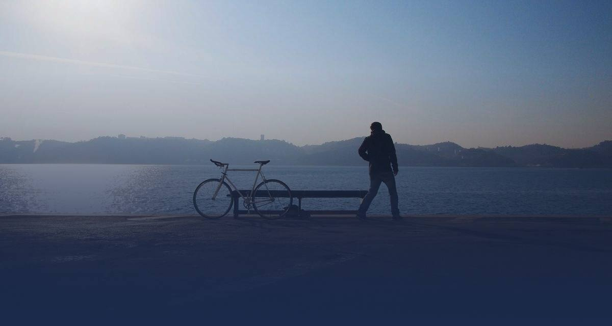
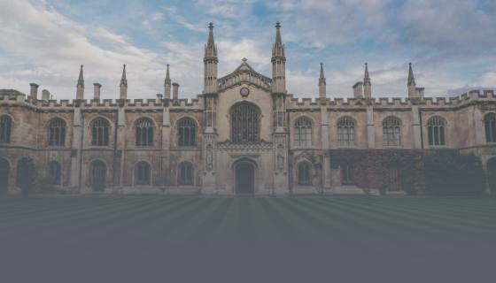
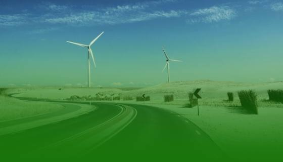
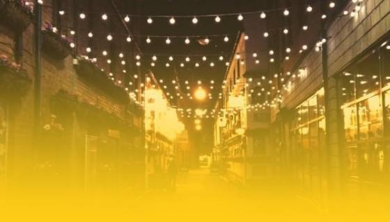
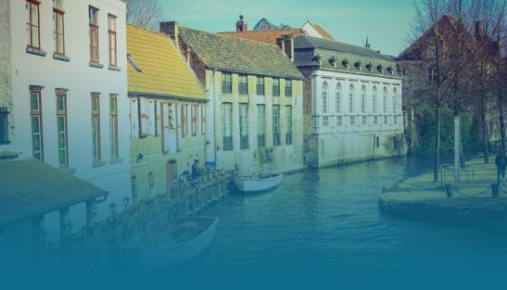

GÜNDEM · ŞEHİR
Yeni hat sahil parkını iki mahalleye bağlıyor. Yol boyunca altı bisiklet park noktası ve içme suyu çeşmeleri var.
3 dk okuma
Günaydın. Bu sabah okumaya değer beş haber; hepsini kahven soğumadan bitirirsin.

KAMPÜS
Kampüs kütüphaneleri sınavda gece de açık
Okuma salonları 1–14 Aralık arasında 24 saat hizmet verecek.

SPOR
Sahil yolunda 10 km kış koşusu: kayıtlar açıldı
Koşu 14 Aralık sabahı yapılacak; katılım ücretsiz, kontenjan 2.000 kişi.

KEŞFET
Eski çarşıda ışık festivali hafta sonu başlıyor
Sokaklar üç gece boyunca ışık yerleştirmeleriyle süslenecek; giriş ücretsiz.

DÜNYA
Kanallı kentlerde kış tekne turları başladı
Turlar kısa günlere göre yeniden planlandı; seferler 10.00 ile 16.00 arasında.
Piyasa · dünkü kapanış · örnek değerler
Dolar
34,52 ▲ %0,2
Euro
36,48 ▼ %0,1
Gram altın
2.940 ▲ %0,4
BIST 100
9.812 ▲ %0,6